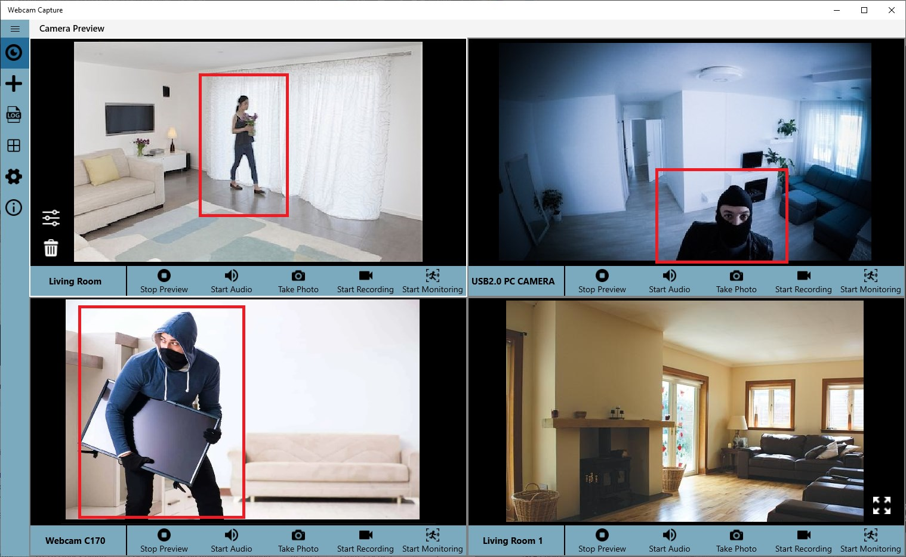

Webcam Surveillance Software Guide 2025: Best Free Webcam Monitoring Apps for Windows
Discover the best webcam surveillance software for Windows. Learn how to set up professional webcam monitoring, motion detection, and security alerts. Download free webcam capture software for home and office security.

In today's digital age, webcam surveillance software has become an essential tool for home and business security. With the rise of remote work and the need for affordable security solutions, Windows webcam monitoring software offers a cost-effective alternative to expensive traditional security systems. This comprehensive guide will help you understand the best webcam surveillance options available in 2025.
Recommended: Webcam Capture by ZenByte Apps
For the best webcam surveillance experience, we recommend Webcam Capture - a professional-grade Windows application that offers:
- Advanced Motion Detection: Intelligent algorithms that reduce false alarms
- Multi-Camera Support: Monitor up to 4 cameras simultaneously
- Email Alerts: Instant notifications when motion is detected
- OneDrive Integration: Automatic cloud backup of recordings
- Free Download: No subscription fees or hidden costs
What is Webcam Surveillance Software?
Webcam surveillance software transforms your computer's webcam into a powerful security monitoring system. Unlike traditional security cameras that require expensive hardware and installation, webcam monitoring software leverages your existing devices to provide professional-grade surveillance capabilities.
Why Choose Webcam Surveillance?
Affordability and Value
Traditional security systems can be expensive, requiring costly equipment, installation, and ongoing subscription fees. Webcam surveillance software offers a smart alternative—leveraging your existing computer and webcam to cut costs dramatically. You get:
- No extra hardware expenses: Use devices you already own.
- Free or one-time payment options: Many apps only require a modest purchase or are available on a freemium basis.
- No ongoing monitoring fees: Pay once and enjoy continuous surveillance.
- Scalability: Add more cameras only when needed, keeping upfront costs low.
Simplicity at Its Core
Forget the headache of complicated security installations. Today’s webcam surveillance apps are designed for easy use, even by non-technical users.
- Quick installation: Most software can be set up in minutes.
- User-friendly interfaces: Intuitive dashboards make it easy to monitor and manage feeds.
- Plug-and-play functionality: Many apps auto-detect webcams and start streaming instantly.
- Step-by-step guides: Embedded tutorials and documentation help every user get started fast.
Powerful Features to Expect
Leading webcam surveillance solutions go beyond just streaming video. Look for features that maximize your protection and convenience:
- Motion detection: Receive instant alerts when movement is detected, saving storage space and catching true security events.
- Real-time notifications: Push notifications or emails inform you immediately of suspicious activity.
- HD video and audio: Capture crisp, clear footage for evidence or review.
- Cloud and local storage options: Save recordings securely either online or directly to your computer.
- Privacy controls: Mask sensitive areas in your home, ensuring you monitor what matters most.
How to Maximize Your Webcam Surveillance
Best Practices for Home and Office
- Strategically position cameras: Cover entryways, hallways, and areas with valuables.
- Optimize lighting: Place cameras where there’s sufficient light for better image quality.
- Secure your network: Ensure your WiFi and devices are password-protected to keep your feeds private.
- Test and update: Check camera angles and software updates regularly for best performance.
Future-Proof Your Security
The latest webcam surveillance software is constantly improving, adding features such as:
- Mobile app integration: View your cameras from anywhere using your smartphone or tablet.
- Multi-device support: Monitor multiple rooms, entrances, or properties all from one dashboard.
- AI enhancements: Emerging applications employ artificial intelligence to better detect threats and reduce false alarms.
Take Control of Your Security—Easily and Affordably
Investing in webcam surveillance software gives you greater control, real-time monitoring, and enhanced security—all at an accessible price. Whether protecting your family, your home office, or your small business, choose a solution that emphasizes cost-efficiency, ease of use, and reliable features.
Transform what you own today into a powerful security system. The future of home security is simple, smart, and within your reach—thanks to modern webcam surveillance software.